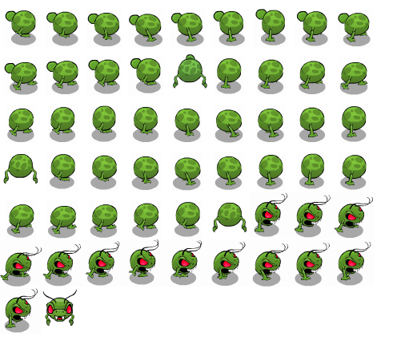
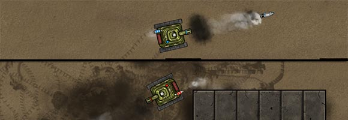

By Lanny McNie, Michael Graves, and Chris Caldwell of gskinner.com
This article recently appeared on the Atari Arcade Developer Center, a collaboration by the teams at gskinner.com , Atari and Internet Explorer.

This tear-down will give you some great best practices for building games - how we used this suite of tools to build our vision of a modern arcade on the web. We've literally made hundreds of enhancements that are available for you to use open source on GitHub. It includes pre-loaded game templates, pre-set touch controls, effects, score helpers and some pre-built libraries for rudimentary collisions and physics.
A lot of this inspiration came from the new capabilities and performance in Internet Explorer 10 that allow people to interact in an entirely new way on the web - with touch on Windows 8 tablet devices. Gaming classics like Asteroids and Missile Command were the perfect canvas to show what a touch-first web might look like.
In a short amount of time, we were tasked to design and develop a small library of games that demonstrate the best that HTML5 has to offer in touch-enabled Internet Explorer 10. We aimed to maintain the souls of the original Atari titles, while modernizing the visuals, animations and game interactions to best suit the latest standards-based web technologies available in modern browsers today.
This presented an opportunity to really use CreateJS in the manner for which it was intended: Absorb the heavy lifting associated with laborious and costly HTML5 development, and provide an easy, familiar approach for developers building interactive content for the modern web.
Bonus: We get to work with Atari.
Game design and development needs to be flexible, agile, and executed in parallel - with as little time as possible sunk into addressing cross-browser limitations and inconsistencies. Under its lightweight hood, CreateJS provides browser-specific sensitivity, with prioritized and graceful fallbacks that take the guesswork out of your technical approaches, and reduces time associated with testing and debugging.
If this is the first you've heard of CreateJS, take a look at her guts:
The Atari Arcade SDK supplements CreateJS to offer a number of additional tools for developers.
With CreateJS and the Atari Arcade SDK, your fundamental client-side game development bases are covered. If you come from a Flash background, EaselJS and the rest of the CreateJS suite provide a familiar, and approachable way to develop content completely ready for Internet Explorer 10 and other modern browsers.
If you want to build games in HTML5, there really is no better set of tools to get started.
EaselJS is the heart of the CreateJS Suite, and similarly, becomes the heart of each game.
All the visual elements of a game are rendered to an EaselJS stage, which gets redrawn every 16-60 milliseconds (a configurable 20 to 60 fps). This central heartbeat, or "tick", is handled automatically by the EaselJS Ticker, which renders any changes to the properties of text, bitmaps, vector shapes, and animations to the HTML5 Canvas (which is well-supported and hardware accelerated in modern browsers like Internet Explorer 10).
The visual elements of a game can be any of the display objects provided by EaselJS. Each offers functionality that would otherwise need to be tediously re-created.
1. EaselJS offers simple display objects (Bitmap, Graphics, and Text) which provide an easy approach to the control the position, transformation, opacity, filters, visibility, and other properties of a visible object on stage. Elements can be grouped and transformed together using Containers.
// Create a container (group)
var container = new createjs.Container();
// Transform and rotate. Any children will be affected.
container.x = 100;
container.rotation = 5;
// Create a shape
var shape = new createjs.Shape(
new createjs.Graphics().beginFill("#999").drawRect(0,0,50,50)
);
// Create an image
var bitmap = new createjs.Bitmap("path/to/image.png");
bitmap.x = 100;
// Create some text
var text = new createjs.Text("Hello World", "24px Arial", "#990000");
text.x = 200;
// Add it all to the container, which is then put on the stage.
container.addChild(shape, bitmap, text);
stage.addChild(container);
With this approach, elements in a game (such as sprites, controls, and game HUDs) can easily be created, updated, and removed without working with the canvas context.
2. A simplified and powerful Graphics layer, which allows vector graphic instances to be created using familiar APIs, chained with a code-friendly syntax, and even shared between multiple shapes.
// A Graphics object that represents the Atari Logo.
// Each graphic command is chained to the previous one.
var logo = new createjs.Graphics()
.beginFill("#ff0000")
.moveTo(37,3).lineTo(41,3).lineTo(41,23)
.quadraticCurveTo(41,62,8,68)
.lineTo(8,59).quadraticCurveTo(37,53,37,3).cp()
.dr(44,3,10,65)
.moveTo(61,3).lineTo(57,3).lineTo(57,23)
.quadraticCurveTo(57,62,90,68)
.lineTo(90,59).quadraticCurveTo(61,53,61,3).cp()
3. Frame-based animations using spritesheets are great for combining assets for an animation into a single image, which only needs to be loaded once.
{"frames":{
"width":52,
"height":60
"regX":0,
"regY":0,
"count":56,
}, "animations":{
"CentipedeBodyWalk":[14, 26],
"CentipedeWalk":[42, 55],
"CentipedeButtWalk":[0, 12],
"CentipedeBodyAltWalk":[28, 40],
"CentipedeBodyWalkDown":[27, 27],
"CentipedeButtDown":[13, 13],
"BodyDown":[41, 41]
}, "images":["centipede-article.png"]}

Pro Tips
4. Graphic and container-level caching offers better performance, GPU support, and the ability to dynamically composite textures over time. Additionally, The EaselJS SpriteSheetBuilder class can generate "run-time" spritesheets, which provides the filesize-savings of vector graphics, with the run-time benefits of bitmap caching and hardware acceleration.

// Each time a shot is fired, the game stamps it into the arena.
function explodeShot(shot) {
var stamp;
// Determine the right stamp. The stamp is an EaselJS bitmap
// Reuse instances, rather than creating new ones each time.
if (shot.hitSomething) {
stamp = this.craterStamp;
} else {
stamp = this.explosionStamp;
}
// Position the shot
stamp.x = shot.x();
stamp.y = shot.y();
// Set some random scale/rotation
stamp.scaleX = stamp.scaleY = 0.5 + Math.random() * 0.5;
stamp.rotation = Math.random() * 360;
// Stamp the shot in the arena
this.arena.stamp(stamp);
}
// The Arena.js contains the stamp method
function stamp(stamp) {
// Clear out any old children. They aren't drawn so they
// only get removed when we want to stamp something new.
this.groundLayer.removeAllChildren();
// Stamp the new sprite on top of existing cache
this.groundLayer.addChild(stamp);
// Using source-over, it just applies on top
this.groundLayer.updateCache("source-over");
}
It doesn't end there. EaselJS is the most mature piece of the CreateJS suite, and has a ton of evolving features, many updated and introduced during the lifespan of this project.
Here is a simple showcase of all of the different display objects in action. Super Breakout makes use of:
What turns a great concept, great art, and great animation, into a great game is the user interaction. Luckily, HTML and Javascript have long supported a robust mouse interaction model. Unfortunately, the nature of working with Canvas in HTML5 introduces a fairly large hole in this model. Here's why:
When your game is rendered to an HTML5 Canvas, all mouse interactions are captured by a single object: the Canvas. There is no pre-conceived support for clicking on an individual object that has been rendered to pixels, and composited (flattened) with all the other pixels within that single, flat Canvas.
EaselJS does that for you. User interaction is converted into pixel-perfect hit detection, in a performant, and straightforward way. This is the essence the of the EaselJS stage: it bridges the gap between drawing to a single flattened Canvas, and providing useful information conducive to designing responses to user interaction.
New browser innovations like Internet Explorer 10 and mobile Safari provide powerful, easy-to-use touch APIs. Until recently, EaselJS simply had rudimentary single input support. This project was the catalyst needed to add multi-touch support, which is now included out-of-the-box, with no need to add any additional code on your part. Different browsers support multi-touch in different ways (adhering to different APIs), however if you're using EaselJS, you don't have to worry. We've abstracted the cross-browser inconsistencies into a single, straightforward implementation.
var button = new createjs.Bitmap(imagePath);
// Standard display object mouse events
button.onPress = handlePress;
// Simple drag and drop. The events are automatically removed for you.
function handlePress(event) {
event.onMouseMove = handleDrag;
}
function handleDrag(event) {
button.x = event.stageX;
button.y = event.stageY;
}
Example: Touch controls
For Atari Arcade, we also took a hard look at what was generally required by users for touch interactions, and tried to provide out-of the box solutions. The Joystick component, used in Asteroids, Yar's Revenge, Centipede, and Combat, tracks mouse interactions in a defined area, and then translates the drag actions into both a familiar visual representation, as well as normalized data that the games can make use of.
// Initialization is a great time to set up touch controls
function initialize(stage, assets, gameInfo) {
if (gameInfo.touchEnabled) {
// Create a joystick. There are lots of awesome
// configurations, but this is all you need to get
// started. Check out the docs for options!
var joystick = new GameLibs.Joystick(stage);
joystick.setPosition(25, 25);
stage.addChild(joystick);
}
}
Most core interactions and animations in games use programmatic motion to respond to constantly changing mouse or keyboard input. However, other aspects of the game (transitions, timed animations, ticking scoreboards, etc..) need a more predictable type of animation, a role filled by a Tween engine.
TweenJS takes the usual "move-this-from-here-to-there" tweening approach, and adds powerful chaining, making it awesome for sequencing game animations and events. Complex queues of animations can easily be controlled with just a few lines of code. To sweeten the deal, we can easily inject function calls at any point in the tween chain.
// Tween the character back and forth, turning the eyes on and off.
createjs.Tween.get(yar, {loop:true})
.wait(3000)
.call(yar.gotoAndStop, [1], yar) // red eyes
.wait(300)
.to({x:450}, 1200, createjs.Ease.backInOut) // move
.call(yar.gotoAndStop, [0], yar)
.wait(3000)
.call(yar.gotoAndStop, [1], yar)
.wait(300)
.to({x:50}, 1200, createjs.Ease.backInOut)
.call(yar.gotoAndStop, [0], yar);
// Hover the character up and down
createjs.Tween.get(yar, {loop:true})
.to({y:20}, 500, createjs.Ease.quadInOut)
.to({y:0}, 500, createjs.Ease.quadInOut);
TweenJS isn't limited to display object properties either. It can tween just about anything. For example, all the scoreboards in the games use the ScoreManager library included in the SDK - which has a simple API: setScore(). Once the score changes, TweenJS transitions the score over a specified duration with little to no code.
// Each time score is added, tween the value.
function addScore(score) {
// Save the new score
this.newScore = score;
// Create a tween that will update the "displayScore", which
// we use to display the changing number.
var tween = createjs.Tween.get(this).to({displayScore:score}, 800);
// For this example, set a local "scope" so the onChange
// callback has something to refer to.
var scope = this;
// As the tween runs, it will call "onChange"
tween.onChange = function(tween) {
// Update the text instance with "displayScore".
scope.text.text = scope.displayScore;
}
}
// The "ScoreManager" abstracts the score formatting and tweening.
function killEnemy(points) {
this.scoreManager.addScore(points);
}
We can't overstate enough how much we used TweenJS developing the Atari Arcade games. From transitioning the tiles in Super Breakout, resetting the gnome in Centipede, to spawning the tanks in Combat, TweenJS offers a straightforward and reliable way to transition values over time and have the results drawn to the screen every frame. And since it's tied to the CreateJS Ticker, tweens simply pause and resume with the game.
Some other examples include:
We even use it in the Arcade Chooser navigation where you select games to snap the column back into its position.
One last tip. Since our games are all tied to a single heartbeat, TweenJS is a great replacement for delayed function calls in place of something like setTimeout. This enables us to have timed event chains, without concerning ourselves with things like a user pausing the game.
function killPlayer() {
// Create a tween
var tween = createjs.Tween.get(this.player).wait(100);
for (var i= 0; i<5; i++) {
// Tween in and out the player five times
tween.to({alpha:1}, 200)
.to({alpha:0}, 600, createjs.Ease.quadOut);
}
// After 2 seconds, show a dialog.
// After another 3, hide it, and restart the game.
createjs.Tween.get(this)
.wait(2000)
.call(this.showGameOverDialog, null, this)
.wait(3000)
.call(this.hideGameOverDialog, null, this)
.call(this.restartGame, null, this);
}
Preloading in CreateJS is something we are able to largely hide from developers. Using an asset manifest (a simple XML file describing assets and their locations), the site framework uses PreloadJS to automatically download and manage assets needed for the games. This includes scripts (which are injected into the HTML DOM), audio, images, and JSON data, which are passed into the games.
Even for us on this project, PreloadJS was a god-send. Preloading is one of the most fragmented, unpredictable, "needs-a-fallback-approach" technologies in JavaScript, and the library wraps it all up into a few easy API calls. From the developers perspective, it doesn't matter whether the browser supports XHR (XMLHttpRequests), requires ArrayBuffer responses, esoteric headers, or other fun workarounds. Just point at some assets, and go. The latest browsers get fancy progress events with granular data, and older browsers get chunked loading, but as developers you don't even need to think about it.
Once the assets are loaded, a JavaScript object is passed to the game right before it is started. Assets are accessible using the IDs that are provided in the game manifest, including references to the actual loaded content, which can be directly used in games without worrying about waiting for loads.
Example: Using a loaded asset in a game.
// The game manifest includes an image
var assets = [
{id:"projectile", src:"images/projectile.png"}
];
// Inside the game, we just do this
function initialize(assets, stage) {
var bitmap = new createjs.Bitmap(assets.projectile);
stage.addChild(bitmap);
}
There is something about audio in a game that makes it complete. When building Centipede, the game just didn't have that sense of panic that we remembered as kids playing on our parent's old dusty consoles (hey, we aren't that old). Adding the sounds and background track is what stirs up the emotion.
We teamed up with the awesome artists at Washingtron Inc, to create a great suite of sounds for the games, and implemented them in no time. In fact, most of the time was dedicated to determining exactly when to play the sounds, and not how. Any guesswork in terms of browser capabilities, required formats, and fallback scenarios is covered out of the box, and any trouble cases can easily be set to force a specific approach.
SoundJS transparently manages the preloading of audio as a plugin to PreloadJS - right down to determining which audio to load depending on the browser. It really couldn't be easier.
Pro tips:
The only limitation we currently face in the HTML5 audio landscape right now is on iOS. While it is possible to play audio (single sound, on click), we are unable to play multiple on-demand sounds like we can everywhere else. The future is looking bright though - we should have WebAudio in iOS 6 - and SoundJS will be ready to support it!
Anyone familiar with gskinner.com knows we come from a strong Flash background. Even though we are working in a lot of new tech these days, we still recognize where Flash has its strengths. Our artists work a lot in Illustrator and Photoshop for asset design - but there is no better tool for timeline or character animation than good ol' Flash Pro.
One of our other passions is tool development. Why do a task 1000 times, if you can build a tool in that time that can do it for you? Zoë was the answer to that question in 2010 for our first HTML5 game with Microsoft, Pirates Love Daisies.
Animations in Flash can be spit out to spritesheets in a breeze. Zoë remembers your history, so that any changes made to sprites can be re-exported with a push of a button (or two). We also provide a nifty script to help combine assets into a single, packed spritesheet.
Example: Centipede's Centipede
The main aggressor and game's namesake, can be represented by a simple spritesheet, with a walk cycle moving horizontally and vertically. The final game spritesheet is combined with the rest of the assets, as well as the "death animation", for when the centipede meets his end.
But it doesn't end there. Zoë was designed to be part of the team, and exports spritesheet JSON data, which is easily consumed into EaselJS, and rendered as animated sprites. Mathematical!
CreateJS provides game developers the freedom to use an architectural approach that is comfortable to them, while maintaining a development sandbox that the framework at large can control. Plugin-free web-based game and application development is still a rocky landscape, and CreateJS aims to reduce the barrier to entry.
When we combine that workflow with the awesome Atari Arcade SDK and game framework, developers get to put aside browser compatibility and workarounds, tedious Canvas APIs, multiple user input APIs and approaches, preload queues, and focus on the best parts of game development: gameplay.
1. Read our article on game development with the SDK. It dives into building a game, including some tips and tricks we used when developing the first set of games.
Game Development with the Atari Arcade SDK
2. Visit the Arcade GitHub repository to download the SDK, documentation, and the Quick Start Guide.
Atari Arcade SDK on GitHub
3. Start playing!
Here's some additional resources and references for game development in HTML5.
Lanny McNie, Michael Graves, and Chris Caldwell are the senior staff of gskinner.com, an agency focused on building bleeding edge interactive and creative, and bringing value to platform owners, developers, and end users alike. We produce success stories that showcase and enhance technology platforms. We recently worked with Atari to bring re-imagine the Atari Arcade using webstandards like HTML5, CSS3, and websockets.